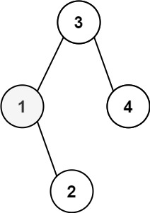

230. 二叉搜索树中第 K 小的元素
中序遍历改迭代栈：一路向左把左链压栈，弹出的就是中序下一个，弹栈计数到 k 即答案。
思路
- 第 k 小就是中序遍历的第 k 个结点；用迭代栈代替递归，走到第 k 个能立刻停。
cur一路向左走，路径结点全部压栈；cur为空就弹栈顶——它就是中序的下一个。- 每弹一个计数加 1：数到 k 直接返回，否则转向弹出结点的右子树，重复「压左链、弹栈顶」。
- 栈里始终只有一条左链，空间 O(h)；
return -1只是补齐签名，k 合法时到不了。
图解
最优解
1import java.util.*;2 3class Solution {4 public int kthSmallest(TreeNode root, int k) {5 Deque<TreeNode> stack = new ArrayDeque<>(); // 栈里存从根下来的整条左链6 TreeNode cur = root;7 while (cur != null || !stack.isEmpty()) {8 while (cur != null) { // 一路向左，路径全部入栈9 stack.push(cur);10 cur = cur.left;11 }12 cur = stack.pop(); // 弹出的就是中序的下一个13 if (--k == 0) return cur.val; // 数到第 k 个就是答案14 cur = cur.right; // 转向右子树，继续中序15 }16 return -1; // 题目保证 k 合法，走不到这里17 }18}题目
给定一个二叉搜索树的根节点 root ，和一个整数 k ，请你设计一个算法查找其中第 k小的元素（k 从 1 开始计数）。
示例 1：

输入：root = [3,1,4,null,2], k = 1 输出：1
示例 2：

输入：root = [5,3,6,2,4,null,null,1], k = 3 输出：3
提示：
- 树中的节点数为
n。 1 <= k <= n <= 1040 <= Node.val <= 104
进阶：如果二叉搜索树经常被修改（插入/删除操作）并且你需要频繁地查找第 k 小的值，你将如何优化算法？
题面取自力扣当前版本。
数据快照 2026-11-04。题面版权归力扣所有，本站点仅供本人学习使用，请勿对外发布。